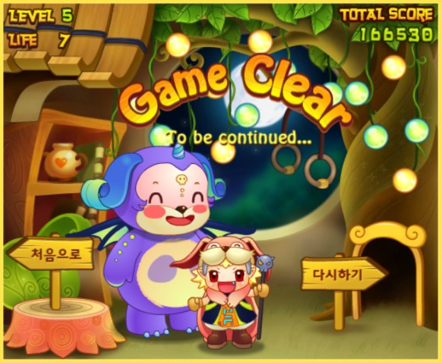

· 검사결과 ·
나와 어울리는 플래시 게임은
미스테리 펫
(INFP)

친구들과 함께 놀 때도 즐겁지만 혼자 있을 때 비로소 진짜 쉰다고 느끼기는 당신에게 ‘미스테리 펫’ 을 추천해드립니다!
사람들과 만나며 사용한 에너지를 혼자 힐링하며 채워보는 것이 어떤가요? 밖에선 남에게 맞추어 결정을 내렸다면 게임 할 때 만큼은 내가 원하는 순서로, 원하는 게임을 해보아요!
당장의 실패와 좌절보다는 그 사람의 가능성을 바라봐주고 목표를 성취할 수 있도록 해주는 당신! 하지만 자기의 실패에는 민감하게 반응 하는 스타일이군요.
게임할 때 만큼은 자기 자신에게 조금 관대해지는 것은 어떤가요? 미스테리 펫은 무려 10번이나 도전할 수 있는 기회를 준답니다!
화려한 액션 보다는 예쁜 색감, 디자인을 좋아한다면 미스테리 펫의 귀여운 디자인과 귀여운 미니 게임들을 즐겨보세요! 통통 튀는 노래도 덩달아 당신을 신나게 해줄 거에요!
사람들과 만나며 사용한 에너지를 혼자 힐링하며 채워보는 것이 어떤가요? 밖에선 남에게 맞추어 결정을 내렸다면 게임 할 때 만큼은 내가 원하는 순서로, 원하는 게임을 해보아요!
당장의 실패와 좌절보다는 그 사람의 가능성을 바라봐주고 목표를 성취할 수 있도록 해주는 당신! 하지만 자기의 실패에는 민감하게 반응 하는 스타일이군요.
게임할 때 만큼은 자기 자신에게 조금 관대해지는 것은 어떤가요? 미스테리 펫은 무려 10번이나 도전할 수 있는 기회를 준답니다!
화려한 액션 보다는 예쁜 색감, 디자인을 좋아한다면 미스테리 펫의 귀여운 디자인과 귀여운 미니 게임들을 즐겨보세요! 통통 튀는 노래도 덩달아 당신을 신나게 해줄 거에요!
검사자 총
73,591명 중
나와 같은 유형을 가진 사람은
2,346명 입니다.